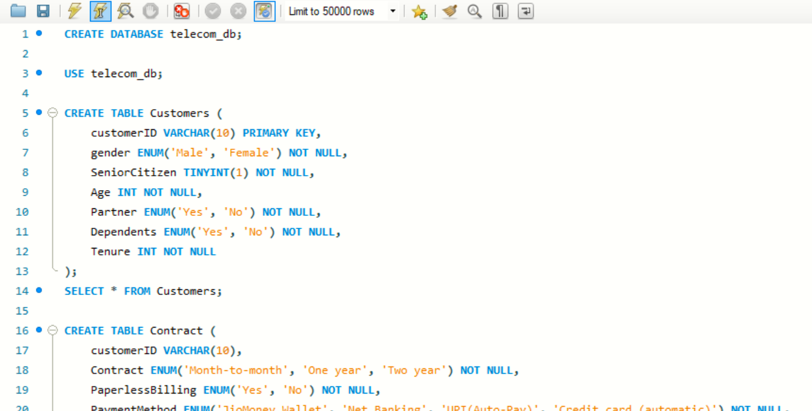
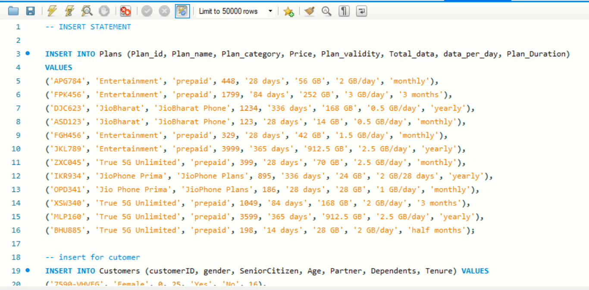
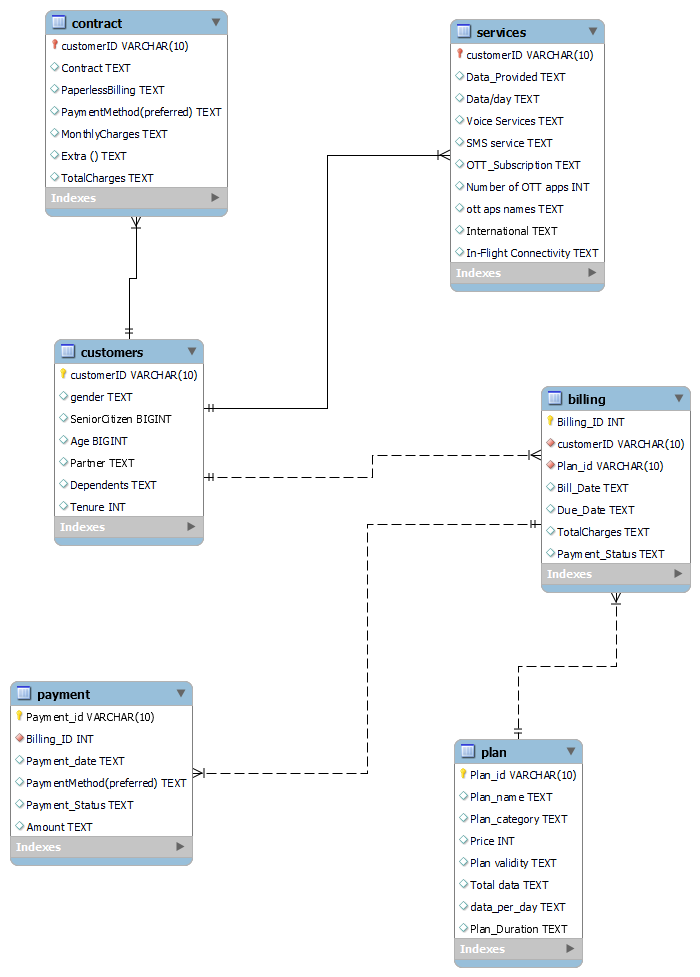

The objective of this project is to analyze customer data from a telecommunications company (Jio) using SQL queries. This project aims to extract insights on customer behaviors, payment patterns, service usage, and plan preferences by utilizing SQL's basic queries, aggregations, joins, window functions, subqueries, and more advanced concepts. The analysis helps in understanding customer segmentation, overdue payments, subscription trends, and popular services.
SQL (MySQL): Primary technology used for querying the customer database.
RDBMS: MySQL as the database management system for managing customer, billing, service, plan, and payment data.
Relational Database Design: Tables linked using foreign keys, supporting robust query operations across multiple datasets.
Senior Citizen Demographics:
Many senior citizens with dependents were identified using simple queries. This demographic represents an important customer segment for targeted services like family plans and special discounts.
High Revenue Customers:Customers with the highest total charges were revealed, providing insights into high-value customers. These customers contribute significantly to Jio’s revenue, and offering loyalty programs or premium services can further boost retention.
OTT Subscription Trends:The analysis showed that customers with OTT subscriptions tend to have multiple apps. The popularity of OTT services suggests a growing demand for bundled OTT and data plans, indicating potential areas for Jio to focus on, especially in marketing partnerships with OTT providers.
Popular Payment Methods:Average monthly charges segmented by payment methods showed the most common ways customers prefer to pay. Understanding customer payment preferences allows for better customization of billing cycles and promoting paperless billing options to improve efficiency.
Overdue Payments:
Customers with overdue payments were identified, providing an actionable list for the finance team to follow up. The company can deploy payment reminders or introduce flexible payment options for customers who are repeatedly late.
Service Usage:
A significant number of customers subscribed to either voice or SMS services, but not both, highlighting that some customers may prefer data and OTT services over traditional communication methods. This trend could signal a shift in user behavior toward internet-based communication and entertainment.
Plan Popularity: The most popular plan categories and total data usage were identified, helping Jio prioritize and promote the most popular plans. Plans offering higher data/day were favored, which suggests that data consumption is increasing, and customers are opting for plans that support heavy data use.
Data Consumption Patterns:Insights into data usage patterns were uncovered, showing how customers are consuming data through their plans. This helps Jio tailor their data offerings to match customer needs, such as increasing data limits or creating specialized plans for high-data users.
Payment Behavior:The analysis of customer payments over the last six months revealed the number of transactions made, providing key insights into payment consistency. This helps Jio track payment behaviors and design strategies for improving cash flow, such as offering discounts for timely payments or subscription-based billing.
Customer Segmentation Based on Charges:
Customers were classified into low, medium, and high spenders based on total charges. Jio can now tailor marketing and customer engagement strategies for each segment. High spenders may be offered premium services or rewards, while medium and low spenders could benefit from upsell opportunities.
String Operations on OTT Services:
By extracting the number of OTT apps each customer subscribes to, Jio gains valuable insight into entertainment consumption trends. This insight can drive new partnerships with content providers and encourage bundling OTT subscriptions with data plans.
Improved Customer Insights: The case study revealed critical insights into customer demographics, behavior, and service preferences, enabling the company to tailor its offerings.
Optimized Service Plans: Analysis of popular plan categories and customer service usage helps Jio optimize its data plans and improve customer satisfaction.
Payment Recovery Strategy: By identifying overdue payments and customer payment behavior, the company can refine its payment recovery processes.
Enhanced Business Strategy: The results of this analysis help in formulating better customer retention strategies, upgrading popular services, and enhancing user engagement for long-term growth.
Data-Driven Decision Making: The comprehensive use of SQL allows the company to make informed decisions based on actual data, optimizing financial performance and customer experience.